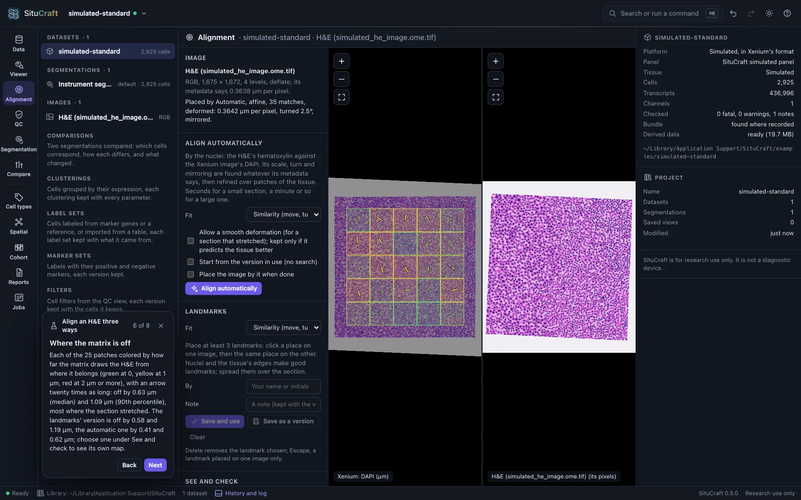
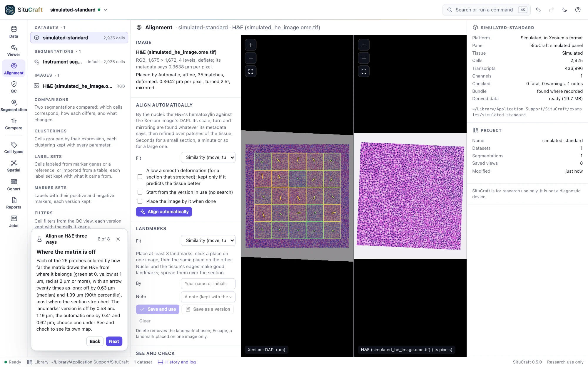

Images and alignment
Post-Xenium H&E and immunofluorescence images are drawn on the tissue under the transcripts and cells, placed by an alignment you can make by landmarks or automatically, and check in µm over the whole section.
Post-Xenium images
A Xenium run leaves the section intact, so it can be stained (H&E) or imaged for proteins (immunofluorescence) afterwards. SituCraft draws such an image on the tissue, under the transcripts and cells, placed by an alignment to the Xenium image. To practice, the simulated example has both (in its post_xenium folder, the matrix in its truth), and its worked examples align the H&E, draw regions on it and review cells against it.
In the Viewer, open Post-Xenium images, then Add a post-Xenium image:
- Image: the path of the OME-TIFF. SituCraft reads pyramidal, tiled OME-TIFFs, as Xenium Explorer does; a flat image is refused with how to make one (10x's image conversion guide, or
bfconvert -pyramid-resolutions 6 -pyramid-scale 2 -tilex 1024 -tiley 1024). - Check: says what the image is (RGB or its channels, its size and levels, its compression) and fills in the alignment when one named after the image lies beside it, as 10x names them (
<sample>_he_imagealignment.csvfor<sample>_he_image.ome.tif). - Alignment (optional): the transformation matrix or the keypoints Xenium Explorer saves (its Download Image Alignment File). Without one, the image is added unaligned, to place by landmarks. An image is placed by an alignment alone: the pixel size its own metadata gives is often the Xenium image's, whatever its own.
- Add the image: a job checksums the image where it lies (it is never copied) and records it as an artifact of the dataset, with its alignment as the first version of it.
Each image is listed under Images in the project tree and in the Viewer's panel, with the version of its alignment that places it (its scale, its turn, whether it is mirrored). Show or hide it and set its opacity; an H&E is drawn in its colors over the stains, an immunofluorescence image's channels each in a color, window and gamma as the stains are (its nuclear stain off at first: the Xenium image's DAPI is the same nuclei). A saved view keeps each image's settings. An image not aligned yet is listed but not drawn.
Aligning by landmarks
The Alignment view (Align it… or Alignment… beside an image in the Viewer) shows the Xenium image on the left, in µm, and the post-Xenium image on the right, in its own pixels; each pans and zooms on its own.
- Place landmarks. Click a place on one image, then the same place on the other: a nucleus, a vessel, the tissue's edge. Spread them over the section. From the fourth on, the fit predicts where the second click falls and that image goes there (a dashed marker); click the exact place. Drag a landmark to move it; Delete removes the one chosen, Escape one placed on one image only.
- Read the fit. A similarity moves, turns, scales (one scale) and mirrors the image; an affine transform also stretches and shears it (scanners' pixels are not always square). For each landmark: its residual, how far the fit puts it from where it was placed, and its left out error, how far the fit of the other landmarks puts it. Residuals understate the error between landmarks; the left-out error is what to expect where no landmark is. A landmark whose left-out error stands out is likely misplaced. With an alignment in use, the panel also says how far these landmarks are from it.
- See it. Lay the image over the stains, as fitted draws it under the fit on the left; Move the images together keeps the two images on the same place as you pan.
- Save. Save and use records the fit as a version of the image's alignment, with your name and a note, and places the image by it; Save as a version keeps it without using it.
Every version is listed under Versions, with how it was made, how well it fits, who made it, when, and the version it was made from. Use places the image by another (the reason is kept with the decision); Edit from it loads its landmarks to change them into a new version; Matrix and Keypoints write it as Xenium Explorer's files, to load with the image there.
To practice, situcraft simulate --post-xenium <folder> makes a simulated tissue with an H&E and an immunofluorescence image of it in post_xenium/, each moved by a known transform and a smooth deformation; truth/post_xenium/registration.json says where each pixel truly lies.
Aligning automatically
Align automatically registers the image by its nuclei: an H&E's hematoxylin (separated from its eosin by color), or an immunofluorescence image's nuclear stain (chosen by its name; pick it if the name does not say), against the Xenium image's DAPI. It finds the image's scale, turn and mirroring whatever its metadata says, refines them, then matches patches over the tissue and fits the model to them (a similarity, or an affine transform). It runs as a job; a small section takes seconds, a whole one a minute or so.
- Allow a smooth deformation for a section that stretched as it was stained: after the model, a smooth warp fitted to the matches, kept only when it predicts matches it was not fitted to better than the model alone. The Viewer draws the image as deformed.
- Start from the version in use to refine an alignment (10x's, or yours) without searching.
- The result is saved as a version, like one made from landmarks; Show its matches draws the patches it matched on both images, in green, and those it dropped, in red.
The same images always give the same alignment, on any computer.
Seeing and checking an alignment


See and check shows on the Xenium image (the left) any version of the alignment, the landmarks' fit before it is saved, or nothing:
- Over the stains at an opacity; a checkerboard of the image and the stains, in squares of a size you choose (a structure that runs straight across the squares' edges is aligned there); or flickering between the image and the stains (what moves is off).
- DAPI's edges over the image, in yellow: the nuclei as the Xenium image sees them, on the image's nuclei. The nuclei's outlines draws the Xenium segmentation's instead.
- Move the images together keeps both images on the same place as you pan.
Measure where it is off checks a saved version over the whole section, as a job: patches of the Xenium image's DAPI where there is tissue, each compared with the image drawn there as the version places it (patches between those an automatic alignment used, so that it is not checked by its own matches). It reports how far the version is off, in µm (the median, the 90th percentile and the most, over how many patches), and a bound of the matches' own error: an error below it may be the matches', one well above it is the alignment's. Show where it is off draws each patch as a square colored by its error (green at 0, yellow at 1 µm, red at 2 µm or more) with an arrow from where the image belongs to where it is drawn, twenty times as long. Check two versions to compare them: 10x's alignment against an automatic one, or one with a deformation against one without.